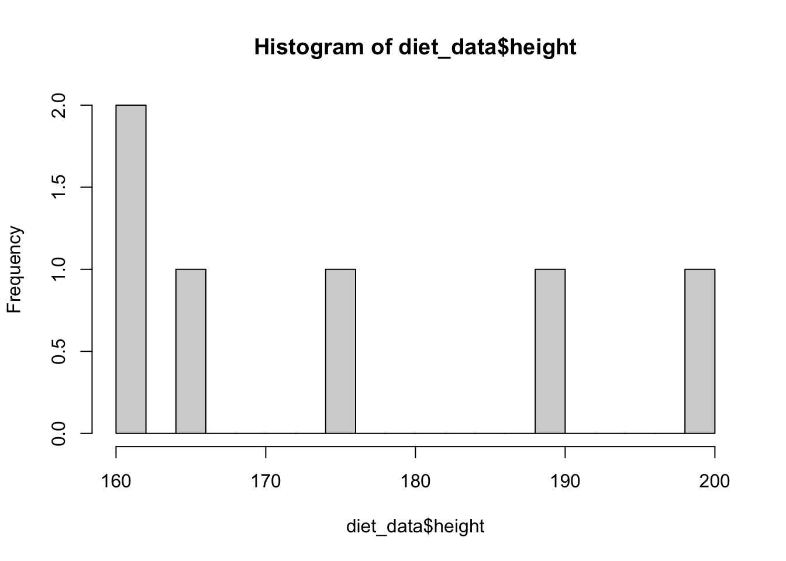
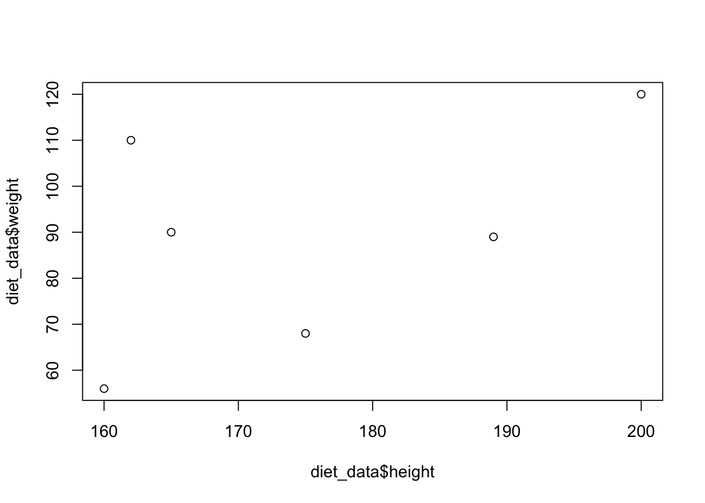

First_session
MartinGarlovsky
2021-11-11
Last updated: 2021-11-24
Checks: 7 0
Knit directory: Introduction2Rstudio/
This reproducible R Markdown analysis was created with workflowr (version 1.6.2). The Checks tab describes the reproducibility checks that were applied when the results were created. The Past versions tab lists the development history.
Great! Since the R Markdown file has been committed to the Git repository, you know the exact version of the code that produced these results.
Great job! The global environment was empty. Objects defined in the global environment can affect the analysis in your R Markdown file in unknown ways. For reproduciblity it’s best to always run the code in an empty environment.
The command set.seed(20211111) was run prior to running the code in the R Markdown file. Setting a seed ensures that any results that rely on randomness, e.g. subsampling or permutations, are reproducible.
Great job! Recording the operating system, R version, and package versions is critical for reproducibility.
Nice! There were no cached chunks for this analysis, so you can be confident that you successfully produced the results during this run.
Great job! Using relative paths to the files within your workflowr project makes it easier to run your code on other machines.
Great! You are using Git for version control. Tracking code development and connecting the code version to the results is critical for reproducibility.
The results in this page were generated with repository version b9963cd. See the Past versions tab to see a history of the changes made to the R Markdown and HTML files.
Note that you need to be careful to ensure that all relevant files for the analysis have been committed to Git prior to generating the results (you can use wflow_publish or wflow_git_commit). workflowr only checks the R Markdown file, but you know if there are other scripts or data files that it depends on. Below is the status of the Git repository when the results were generated:
Ignored files:
Ignored: .DS_Store
Ignored: .Rhistory
Ignored: .Rproj.user/
Untracked files:
Untracked: README.html
Untracked: data/bumblebee_data.csv
Untracked: data/bumblebee_data.txt
Untracked: output/bad_ggplot.pdf
Untracked: output/first_ggplot.pdf
Untracked: output/second_ggplot.pdf
Note that any generated files, e.g. HTML, png, CSS, etc., are not included in this status report because it is ok for generated content to have uncommitted changes.
These are the previous versions of the repository in which changes were made to the R Markdown (analysis/First_session.rmd) and HTML (docs/First_session.html) files. If you’ve configured a remote Git repository (see ?wflow_git_remote), click on the hyperlinks in the table below to view the files as they were in that past version.
| File | Version | Author | Date | Message |
|---|---|---|---|---|
| Rmd | b9963cd | MartinGarlovsky | 2021-11-24 | edit first session |
| html | c9c43bf | MartinGarlovsky | 2021-11-22 | Build site. |
| Rmd | 9405cd0 | MartinGarlovsky | 2021-11-22 | updated index |
| html | 55927d6 | MartinGarlovsky | 2021-11-20 | Build site. |
| html | 6d3d6f7 | MartinGarlovsky | 2021-11-19 | Build site. |
| Rmd | 9ec9bd0 | MartinGarlovsky | 2021-11-19 | wflow_publish(“analysis/First_session.rmd”) |
| html | ccad307 | MartinGarlovsky | 2021-11-19 | Build site. |
| Rmd | 51276f2 | MartinGarlovsky | 2021-11-19 | wflow_publish(“analysis/First_session.rmd”) |
Outline for the course
- Downloading and installing
RandR studio - Basic arithmetic
- Objects
- Functions
- Vectors
- Data frames
- Scripts
- Loading data
- Packages
- The
tidyverse
What is R
Before we get started - what is R and why should you care?
R is a powerful, sophisticated and free to use piece of software to perform (almost) all your data analysis needs. From managing your data through to generating publication ready figures for that paper you’ve been working on.
Ris perhaps the most widely used software used in Ecology and Evolution and has several key features:- Reproducible and stable
- Free to use and open source
Downloading and installing R
First R session
Now we’ve installed R on to our computers lets open it up. You should see something like this.
Not much to see here. But you’re greeted with the:
> called the prompt.
Things to know
Ris case sensitive - which meansRknow the difference between ‘martin’ and ‘Martin’ so that you’ll get an error if you typemartinwhen you meanMartin!- Speaking of error messages - the error messages are often not very helpful for beginners. But the internet is your friend and a quick search will often help you troubleshooting.
Simple arithmetic
We’ll start with some simple arithmetic to get you familiar with how R works. You can type directly in to the console window to perform tasks. This lets you directly interact with R to do things - like perform calculations.
- The math symbols:
+addition-subtraction*multiplication/division^raise to the power of
Type 1 + 1 and hit enter
1 + 1[1] 2Now try 3 x 9
3*9[1] 27Try the following:
- 5 x 9
- \(3^6\)
- Add 3 to 11 and then multiply by 7
- Subtract 14 from from 110 and then raise to the power of 3 plus 1.4 (the answer should be 5.2722188^{8})
- Divide 9 by 2.4
- \(\sqrt51\)
- \(\log_{10}41\) (answer = 1.6127839)
5 * 9[1] 453 ^ 6[1] 729(3 + 11) * 7[1] 98(110 - 14) ^ (3 + 1.4)[1] 5272218809 / 2.4[1] 3.75sqrt(51)[1] 7.141428log10(41)[1] 1.612784Objects
R is ‘object orientated’… we use the <- assign symbol. You can think of this symbol as meaning "make the thing on the left (the object) in to the output of the command on the right. Objects store information, this can be things like sums or the output of a function, data frames or other functions themselves.
Lets create an object called ‘x’ equal to 5 and hit enter.
x <- 5What happened? Nothing right? And you’re left with the prompt blinking again… This is often a good sign in R! The object x has been stored in R’s ‘brain’. You can think of how making objects as “make x equal to 5”.
- Note that
->is equally valid but used less often. - A handy shortcut - instead of typing out
<then-each time we can type ‘alt+-’.
You can inspect the object by typing x in the console and hitting enter again:
x[1] 5We can perform operations on objects such as mathematics:
x * 5[1] 25Note that while we performed an operation on x, it is itself unchanged. We can check this by inspecting x which is still 5 (not 25)
x[1] 5We can also store the output as a new object
answer <- x * 5Be careful with <-; objects can be overwritten. So if you now assign something else to answer you will lose the previous information:
answer <- 200
answer[1] 200These objects are stored in R’s “brain”. This means that when we type x or answer R will search for an object. We can see what objects are stored using ls() (short for list).
ls()[1] "answer" "x" It is often good practice to clear R’s brain at the beginning of every new session. This is because we may have 2 completely different projects where we have stored things with similar names (e.g. model1). We need to start fresh so there is no confusion.
We can remove individual objects using rm() (short for ‘remove’), or we can clear everything from R’s brain by typing rm(list = ls()) (don’t worry too much about what this means for now).
rm(x)
rm(list = ls())Now see what information is stored in R’s brain again, it should be blank:
ls()character(0)Functions
Functions carry out procedures on numbers or objects. For instance, you’ve already used some functions when you calculated \(\sqrt51\) and \(\log_{10}41\). Functions take ‘arguments’ telling it what to use and what to do. For instance, we can use the round() function to round numbers, which takes as its arguments (i) a number and (ii) the number of decimal places to be used.
round(x = 3.1415926535897932384626433832795028841971693993751058209749445923078164062862089986280348253421170679, digits = 3)[1] 3.142We can create objects which contain the output from functions
log_value <- log(5299)Vectors
Vectors are the basic unit in R. A vector stores a 1-dimensional set of values (for instance the numbers 1 to 10). Vectors should contain only one type of data. That means all numbers, or all character strings, etc.
Numeric vectors
We can create a vector using the concatenate function which is shortened to simply c().
num_vec1 <- c(1, 2, 3, 4, 5, 6, 7, 8, 9, 10)Each entry in a vector is called an ‘element’. We can perform operations on vectors. For instance we could add 1 to each element in num_vec1
num_vec1 + 1 [1] 2 3 4 5 6 7 8 9 10 11We could also have created the same vector using the seq() function. Notice that seq() takes multiple arguments (i.e. from =, to =, by =, etc.) and we can generate the same result in different ways. You can check what arguments can be used with a function with the ? to access the help page for a function (i.e. ?seq). Note that these ‘help’ pages are often not very useful for beginners, but as you learn more about R you will find it easier to interpret these pages.
num_vec1a <- seq(from = 1, to = 10, by = 1)
num_vec1b <- seq(from = 1, to = 10, length = 10)We can check whether our two different uses of seq() produce the same result by subtracting every value from num_vec1b from num_vec1a. We should get all zeros: \(1 - 1 = 0\), \(2 - 2 = 0\), etc.).
num_vec1b - num_vec1a [1] 0 0 0 0 0 0 0 0 0 0This demonstrates again how operations performed on vectors work. The first element from num_vec1b (1) was subtracted from the first element of num_vec1a (1), and so on.
Character vectors
Character vectors work in a similar way to numeric vectors that we just introduced. But first a little terminology. Martin is a character ‘string’ containing a series of characters (letters) next to each other.
We can create a character vector like so
myname <- c('Martin', 'David', 'Garlovsky')Working with vectors
What if we want to access information from within our vectors? Here we’ll also explain what the numbers that appear at the left hand side of the console, i.e. [1] mean. This number 1 in square brackets is telling us the position of this element in the vector. If we have a longer vector that prints over multiple lines we’ll see more numbers telling us the position of that element in the vector. For instance below, the 19th element in our vector is the number 37, while the 91st element is the number 181.
seq(from = 1, to = 200, by = 2) [1] 1 3 5 7 9 11 13 15 17 19 21 23 25 27 29 31 33 35
[19] 37 39 41 43 45 47 49 51 53 55 57 59 61 63 65 67 69 71
[37] 73 75 77 79 81 83 85 87 89 91 93 95 97 99 101 103 105 107
[55] 109 111 113 115 117 119 121 123 125 127 129 131 133 135 137 139 141 143
[73] 145 147 149 151 153 155 157 159 161 163 165 167 169 171 173 175 177 179
[91] 181 183 185 187 189 191 193 195 197 199If we want to know the value from a specific position in our vector we use the square brackets ([]). For instance, if we want to find out what the 7th number in our numeric vector is:
num_vec1[7][1] 7Or if we wanted to find my middle name:
myname[2][1] "David"You can also create vectors using the : symbol as a shortcut to get a vector of integer values. For instance, if we want the first 10 letters of the alphabet, we can combine the letters with the index 1:10:
letters[1:10] [1] "a" "b" "c" "d" "e" "f" "g" "h" "i" "j"Data frames
R is really great for working with what are called ‘data frames’. Data frames contain rows and columns of vectors containing information. Usually (hopefully) each row in a data frame corresponds to an observation (e.g. from a single individual or sample), and each column contains a variable (e.g. treatment, weight, Date, etc.). We’ll make this clear with a dummy example to begin with. Let’s imagine we have measured the height and weight of 6 people that took part in a study where volunteers ate a vegetarian or vegan diet for 6 weeks.
First, lets create the 3 variables; height (in cm), weight (in kg), and diet (vegan or vegetarian) by making vectors.
height <- c(165, 175, 162, 160, 189, 200)
weight <- c(90, 68, 110, 56, 89, 120)
diet <- rep(c('vegan', 'vegetarian'), 3)Then we’ll create the data frame using the data.frame() function.
diet_data <- data.frame(height, weight, diet)Inspecting the data
Often the very first thing to do after loading our data is to make a quick first inspection. There are several useful functions for inspecting the structure and contents of data frames. Base R has many useful functions, and the tidyverse offers a range of alternatives (which we’ll see later).
str
First lets take a look at the structure of the data using the str() function. By ‘structure’ we mean how many rows and columns are there in the data frame? What are the names of the variables in the data? What form are the variables (i.e., numeric, character, integer, etc.)?
str(diet_data)'data.frame': 6 obs. of 3 variables:
$ height: num 165 175 162 160 189 200
$ weight: num 90 68 110 56 89 120
$ diet : chr "vegan" "vegetarian" "vegan" "vegetarian" ...We can see that the data frame consists of 6 observations (obs.) of three variables. height and weight are numeric (num) variables and the diet variable consists of character strings (chr).
head
Along with checking the structure of the data, it is often useful to take a quick look at the data frame (rather than trying to see all the data at once). We can use the head() function to look at the first few rows of the data frame. By default head() returns the first 6 rows of the data frame. What about if we wanted to see more (or less) than 6 rows? - Hint: take a look at ?head
head(diet_data) height weight diet
1 165 90 vegan
2 175 68 vegetarian
3 162 110 vegan
4 160 56 vegetarian
5 189 89 vegan
6 200 120 vegetarianWe see the first 6 rows of the data frame and all the variables. For larger data frames with more variables that extend beyond the console window the information may be printed over several lines.
- Like
head()we can also look at the last entries in a data frame usingtail().
summary
The summary() function can also be used to… summarise the data in a data frame. For instance, showing us the range of values and simple statistics like the minimum and maximum values, mean, median, and interquartile range.
summary(diet_data) height weight diet
Min. :160.0 Min. : 56.00 Length:6
1st Qu.:162.8 1st Qu.: 73.25 Class :character
Median :170.0 Median : 89.50 Mode :character
Mean :175.2 Mean : 88.83
3rd Qu.:185.5 3rd Qu.:105.00
Max. :200.0 Max. :120.00 summary() is a versatile function and can be used on a range of different types of objects which we will learn about later.
Using the script window
So far we’ve been working exclusively in the console. Unlike in the console window, hitting enter in the script window no longer executes your code, but instead will insert a new line. To execute a line of code we have to highlight the text and press cmd + enter (on Mac) or ctrl + enter (PC). To execute an entire line we do not have to highlight anything but can simply hit cmd + enter/ctrl + enter and R will execute the code and move to the next line. In the next section introducing packages this will hopefully become clear.
Good coding practice
You can explore options to make your code easier to understand, such as adding rainbow parantheses to keep track of multiple brackets (Preferences > Code > Display), or change the theme to make your code more readable (Preferences > Appearance).
- Annotate everything!
- Structure your script
- Load
libraries - Load
data - data wrangling
- save results
- Load
- Write readable code
- Use meaningful names
- Put spaces between variables and operators (
= + - * /) and after commas (e.g.function(x, y)) - Keep code to less than 80 characters (where possible). You can add a margin to guide you in
Preferences > Code > Display
Annotating your script
Working with scripts has many advantages over working directly in the console. First, when working directly in the consol, if you make a mistake you have to go back and retype everything in to the console (or at least hit the up arrow and find your mistake again). Unless you save the workspace (don’t), you will also not have a record of your workflow - which is crucial to make sure your analyses are reproducible. Working with scripts also allows you to add annotation to your code to help future scientists (this may be your future self) know exactly what you did. The importance of annotating your scripts cannot be overstated! Writing your code in scripts - combined with adding detailed annotation - also allows you to share your code and work collaboratively.
To add a comment to your script first type the # symbol followed by your annotation. You can also use the # to ‘comment’ out a line of code so that R knows not to try and evaluate this line of text.
# Here is an example of adding some annotations to a script.
# A plot of the diet data using base R
plot(diet_data$height, diet_data$weight,
col = c('red', 'blue'),
pch = 16,
cex = 5, # increase the size of the points with 'cex'
ylim = c(50, 130), # increase the Y axis limits so points are not cut off
main = 'Height (cm) vs. Weight (kg)',
xlab = 'Height (cm)', ylab = 'Weight (kg)',
las = 2 # we can change the orientation of the axis labels which is a bit odd in this case...
)
| Version | Author | Date |
|---|---|---|
| ccad307 | MartinGarlovsky | 2021-11-19 |
# We've not covered any statistics yet so this code is commented out
#cor.test(diet_data$height, diet_data$weight)Setting the working directory and importing data
So far we’ve used some ‘dummy’ data to demonstrate how we can use R. When it comes to using your own data, the first step is to load the data in to R. To understand how to do this we first need to understand a little about how the file system works on your computer and working with ‘directories’.
When we want load data in to R from our computer we first have to tell R where to ‘look’ for the file containing the data. By default, R will look in what is called the current working directory. A directory is computer language for a folder. A directory can contain files (like your data), or other folders (other directories).
When we ask R to load the data it first looks in the current working directory. You can think of this like if you were to look for a pair of shoes to put on. The room you are currently in is the current working directory. The shoes (file) you want may be in this room (directory), but might be in another room (directory). If the folder (shoes) are in a different directory (room) to the one we are currently in we have to tell R to go and look in another directory.
We can find the current working directory with getwd() (wd stands for working directory)
getwd()[1] "/Users/martin/Dropbox/Introduction2Rstudio"This character string, separated by /’s is called a path, and gives the directions to the current working directory. So we are in the directory Introduction2Rstudio which is in the Dropbox directory, which is in the martin directory, which is in the Users directory, which is in the root directory.
You can see the current working directory and what files are in there interactively using the Files tab in the help panel. We could move the files we want to load in to R in to the current working directory. Alternatively, we can tell R to move to a different working directory to look for files using setwd(). Here I set the working directory to "/Users/martin/Dropbox/TUDAZ", using the shortcut ~/ which tells R to start from my ‘home’ directory ("/Users/martin").
setwd('~/Dropbox/TUDAZ')Then we can check that we have changed working directory with getwd() again
getwd()[1] "/Users/martin/Dropbox/TUDAZ"Alternatively, you can navigate anywhere in your computer using the file path, though this is a bit advanced for beginners and those not familiar with the path system.
Loading the data
Once we have changed the working directory to the tell R where we can find our data, we can finally load the data in to R. There are many different file types, and you might be most familiar with something like an excel spreadsheet. Excel may be good for entering your raw data and there are packages available to load data directly from .xls files. However, often we will work with .csv or .txt files which have advantages over excel files such as taking up less space on your computer, making them faster to loadrs
We have a data set of bumble bee visits to different flowers in the form of ‘comma separated values’, or .csv file in the data folder. To load the data we can use the read.csv() function and use the <- symbol to call the loaded data bumblebees.
bumblebees <- read.csv('bumblebee_data.csv')For this example the only argument we need is the path to the .csv file. If we try and load the same data saved as a ‘tab-delimited text’ .txt file using the read.delim() function we need to specify a couple more arguments. sep = '\t' tells the function that values in each column are separated by a ‘tab’ which in computer code is denoted with \t. We also need to tell read.delim() that the first row in the file should be used as column names using header = TRUE. We’ll call this object bumble_txt and then quickly inspect the data.
bumble_txt <- read.delim('bumblebee_data.txt', sep = '\t', header = TRUE)head(bumble_txt) ID Blossom.type Blossom.colour Pollinator.species Flower.visit.per.10.min
1 1 complex blue Bombus terrestris 11
2 2 simple yellow Bombus terrestris 6
3 3 complex yellow Bombus terrestris 6
4 4 simple blue Bombus terrestris 21
5 5 complex blue Bombus terrestris 9
6 6 simple yellow Bombus terrestris 3
Flower.visit.duration.s
1 6
2 17
3 5
4 14
5 18
6 16Managing your projects and folders
Ideally, we want to organise our projects and data efficiently. It is a good idea to have separate folders for each project you are working on. For instance, you might have one folder for this R course, and another folder for your dissertation project. These should be in a parent directory called TUDAZmasters or something like that. R studio has some dedicated tools to make working in separate projects easier that we will introduce later. For instance, this document you are reading is part of an R project. All the data and R scripts relating to this course can be found in one directory (called Introduction2Rstudio).
Packages
Next we’ll introduce one of the things which makes R such a versitile and powerful tool for data analysis. That is the huge numbers of packages which extend the utility of R for almost any data analysis or graphics problem you might have.
Installing and loading packages
When you first downloaded and installed R it came ready to use with some packages already installed (such as stats and graphics). But to really harness the power of R we can install additional packages. We will be using the tidyverse package and environment a lot in the following sections which we’ll install here to demonstrate how packages work. First we use install.packages() to download the tidyverse package from the web. Then we’ll use library() to load the package.
install.packages('tidyverse')
library(tidyverse)── Attaching packages ─────────────────────────────────────── tidyverse 1.3.1 ──✓ ggplot2 3.3.5 ✓ purrr 0.3.4
✓ tibble 3.1.5 ✓ dplyr 1.0.7
✓ tidyr 1.1.4 ✓ stringr 1.4.0
✓ readr 2.0.1 ✓ forcats 0.5.1── Conflicts ────────────────────────────────────────── tidyverse_conflicts() ──
x dplyr::filter() masks stats::filter()
x dplyr::lag() masks stats::lag()New users often have some difficulty understanding the way we work with packages. A common mistake is to use install.packages() each time we want to load a package, instead of library(). You can think of how we use R combined with packages like installing and using software on your phone or computer. The first time you wanted to listen to music on your phone you downloaded and installed the Music app. That is like using install.packages(). Every time you want to listen to music you do not download the app again, you just open the app by pressing the icon. That is like using library(). You need to be connected to the internet to use install.packages(), whereas you can be completely offline when you use library() (and most of the time when using R).
The tidyverse
The tidyverse is a group of packages designed to work together to make data management and analysis easier. There are many other ways to write your code and no one way is superior to the other. The tidyverse follows a set of principle which you may find agreeable, or somewhat dogmatic.
tidy data
One of the key tenets of the tidyverse is ‘tidy’ data. You may remember that earlier we mentioned that ideally data should be in the form of having each row corresponding to an ‘observation’ and each column a ‘variable’. This is the tidy data structure. It may not always be feasible or indeed desirable to record your data by hand in the tidy format. However, once you load your data in to R we can easily ‘reshape’ the data appropriately.
To demonstrate, consider the following data frame which records the weight of our volunteers before and after the 6 week vegan or vegetarian diet treatment.
diet weight_1 weight_2
1 vegan 70.1 69.6
2 vegan 71.5 70.2
3 vegan 70.7 68.9
4 vegetarian 73.5 70.5
5 vegetarian 69.6 69.6
6 vegetarian 69.1 70.7This data is not in the tidy format as the weight variable is split over two columns, weight_1 and weight_2, corresponding to the two time points measurements were taken of each individual before and after the experiment. By comparison a tidy version of the same data would look like the following, with one observation per row, and a new variable (column) indicating the measurement time.
diet time weight
1 vegan 1 70.1
2 vegan 2 69.6
3 vegan 1 71.5
4 vegan 2 70.2
5 vegan 1 70.7
6 vegan 2 68.9
7 vegetarian 1 73.5
8 vegetarian 2 70.5
9 vegetarian 1 69.6
10 vegetarian 2 69.6
11 vegetarian 1 69.1
12 vegetarian 2 70.7Penguin data set
There are vast amounts of data available online for you to download and explore. For our short intro we’ll use a data set containing measurement of penguins on the Palmer Archipelago which is a nice example data set to be able to demonstrate all the various things we need to be able to do. This data set has superseded the previously popular iris data set collected by R. A. Fisher due to his (and his contemporaries) association with eugenics.
First we have to download the data which is available as part of the palmerpenguins package, collected and made available by Dr. Kristen Gorman and the Palmer Station. Then we’ll load the data and take a look. Notice that I have ‘commented out’ the first line of code where we install the package - as I already installed the palmerpenguins package on this computer.
#install.packages('palmerpenguins')
library(palmerpenguins)
str(penguins)tibble [344 × 8] (S3: tbl_df/tbl/data.frame)
$ species : Factor w/ 3 levels "Adelie","Chinstrap",..: 1 1 1 1 1 1 1 1 1 1 ...
$ island : Factor w/ 3 levels "Biscoe","Dream",..: 3 3 3 3 3 3 3 3 3 3 ...
$ bill_length_mm : num [1:344] 39.1 39.5 40.3 NA 36.7 39.3 38.9 39.2 34.1 42 ...
$ bill_depth_mm : num [1:344] 18.7 17.4 18 NA 19.3 20.6 17.8 19.6 18.1 20.2 ...
$ flipper_length_mm: int [1:344] 181 186 195 NA 193 190 181 195 193 190 ...
$ body_mass_g : int [1:344] 3750 3800 3250 NA 3450 3650 3625 4675 3475 4250 ...
$ sex : Factor w/ 2 levels "female","male": 2 1 1 NA 1 2 1 2 NA NA ...
$ year : int [1:344] 2007 2007 2007 2007 2007 2007 2007 2007 2007 2007 ...head(penguins)# A tibble: 6 × 8
species island bill_length_mm bill_depth_mm flipper_length_… body_mass_g sex
<fct> <fct> <dbl> <dbl> <int> <int> <fct>
1 Adelie Torge… 39.1 18.7 181 3750 male
2 Adelie Torge… 39.5 17.4 186 3800 fema…
3 Adelie Torge… 40.3 18 195 3250 fema…
4 Adelie Torge… NA NA NA NA <NA>
5 Adelie Torge… 36.7 19.3 193 3450 fema…
6 Adelie Torge… 39.3 20.6 190 3650 male
# … with 1 more variable: year <int>summary(penguins) species island bill_length_mm bill_depth_mm
Adelie :152 Biscoe :168 Min. :32.10 Min. :13.10
Chinstrap: 68 Dream :124 1st Qu.:39.23 1st Qu.:15.60
Gentoo :124 Torgersen: 52 Median :44.45 Median :17.30
Mean :43.92 Mean :17.15
3rd Qu.:48.50 3rd Qu.:18.70
Max. :59.60 Max. :21.50
NA's :2 NA's :2
flipper_length_mm body_mass_g sex year
Min. :172.0 Min. :2700 female:165 Min. :2007
1st Qu.:190.0 1st Qu.:3550 male :168 1st Qu.:2007
Median :197.0 Median :4050 NA's : 11 Median :2008
Mean :200.9 Mean :4202 Mean :2008
3rd Qu.:213.0 3rd Qu.:4750 3rd Qu.:2009
Max. :231.0 Max. :6300 Max. :2009
NA's :2 NA's :2 We can see the penguins data is in the tidy format (yay) and consists of 344 observations of 8 variables describing penguins by:
- species of the penguin
- island it was found on
- bill and flipper measurement
- body mass, sex, and collection year
Using the summary() function we can also see that we have some NA values. NA stands for ‘not available’ and is R notation for missing values. Missing values are important as they can affect how functions work. It is also important to distinguish missing values (NAs) from ‘real’ 0s.
dplyr
dplyr uses a set of ‘verbs’ to manipulate your data frames. The main players are:
select- to choose variablesmutate- to add new variablesfilter- to subset the data- there are many other very useful
dplyrverbs
All dplyr functions take as their first argument the data frame to manipulate, followed by one or more other arguments.
select
We can use the select() function to include or exclude certain variables (columns) from the data frame. For instance, if we are only interested in data to compare bill measurements between species on each island. The first argument in the select() function is the data frame to be manipulated, and the following arguments are the names of the variables we wish to select.
select(penguins, species, bill_length_mm, bill_depth_mm)# A tibble: 344 × 3
species bill_length_mm bill_depth_mm
<fct> <dbl> <dbl>
1 Adelie 39.1 18.7
2 Adelie 39.5 17.4
3 Adelie 40.3 18
4 Adelie NA NA
5 Adelie 36.7 19.3
6 Adelie 39.3 20.6
7 Adelie 38.9 17.8
8 Adelie 39.2 19.6
9 Adelie 34.1 18.1
10 Adelie 42 20.2
# … with 334 more rowsselect() also allows us to rename variables at the same time as selecting them. For instance, we might want to make the names shorter so we have less to type later. At the same time we’ll assign this subset of the data to a new data frame called bill_data. Note that using select() to include only some variables does not affect the original penguins data.
bill_data <- select(penguins, species, length = bill_length_mm, depth = bill_depth_mm)Lets look at the new data frame:
head(bill_data)# A tibble: 6 × 3
species length depth
<fct> <dbl> <dbl>
1 Adelie 39.1 18.7
2 Adelie 39.5 17.4
3 Adelie 40.3 18
4 Adelie NA NA
5 Adelie 36.7 19.3
6 Adelie 39.3 20.6And make sure the original data is unchanged using the dim() function (short for dimensions), which should show us that we still have 344 observations of 8 variables:
dim(penguins)[1] 344 8select() can be used in many different ways that we do not have time for now. But briefly, note that we could have gotten the same resulting data frame by specifying which variables we didn’t want to include using - before the variable name:
select(penguins, -island, -flipper_length_mm, -body_mass_g, -sex, -year)# A tibble: 344 × 3
species bill_length_mm bill_depth_mm
<fct> <dbl> <dbl>
1 Adelie 39.1 18.7
2 Adelie 39.5 17.4
3 Adelie 40.3 18
4 Adelie NA NA
5 Adelie 36.7 19.3
6 Adelie 39.3 20.6
7 Adelie 38.9 17.8
8 Adelie 39.2 19.6
9 Adelie 34.1 18.1
10 Adelie 42 20.2
# … with 334 more rowsmutate
We will often want to perform some sort of transformation on our data. For instance, converting a variable in to different units, or performing a log transformation. As with select(), mutate() takes the data frame we want to manipulate as the first argument, followed by an expression containing the instructions for what we want to achieve. Let’s use mutate() to convert body_mass_g in to kilograms.
mutate(penguins, body_mass_g/1000)# A tibble: 344 × 9
species island bill_length_mm bill_depth_mm flipper_length_mm body_mass_g
<fct> <fct> <dbl> <dbl> <int> <int>
1 Adelie Torgersen 39.1 18.7 181 3750
2 Adelie Torgersen 39.5 17.4 186 3800
3 Adelie Torgersen 40.3 18 195 3250
4 Adelie Torgersen NA NA NA NA
5 Adelie Torgersen 36.7 19.3 193 3450
6 Adelie Torgersen 39.3 20.6 190 3650
7 Adelie Torgersen 38.9 17.8 181 3625
8 Adelie Torgersen 39.2 19.6 195 4675
9 Adelie Torgersen 34.1 18.1 193 3475
10 Adelie Torgersen 42 20.2 190 4250
# … with 334 more rows, and 3 more variables: sex <fct>, year <int>,
# body_mass_g/1000 <dbl>We now have a new column body_mass_g/1000 in the data frame. However, as we did not assign the output of mutate() to an object, we cannot access these results. body_mass_g/1000 is also a messy variable name. We can designate a name for the new variable in mutate() with the = symbol and assign the output of mutate() to a new object. mutate() can be used to create more than one new variable at a time, by separating each new variable by a comma. To make the code easier to read we can also write each on a new line.
penguins_kg <- mutate(penguins,
body_mass_kg = body_mass_g/1000,
bill_area = bill_length_mm * bill_depth_mm)filter
We can use filter() to subset the data to include only rows which meet conditions that we choose. To specify conditions we need to become familiar with using relational and logical operators.
- Relational operators are used to compare between variables such as:
x < y: is x less than yx <= y: is x less than or equal to yx > y: is x more than yx >= y: is x more than or equal to yx == y: is x equal to yx != y: is x not equal to y
Be careful to note that == is not the same as =. In R the single equals (=) is often used within functions, whereas the double equals (==) is used to test for equivalence (i.e. how you might normally think of = symbol).
- Logical operators
x | y: is x OR y true?x & y: are x AND y true?
Perhaps we are only interested in female penguins? Again, filter() takes the data frame we are to manipulate as its first argument, followed by the conditions which must be met for inclusion.
filter(penguins, sex == 'female')# A tibble: 165 × 8
species island bill_length_mm bill_depth_mm flipper_length_mm body_mass_g
<fct> <fct> <dbl> <dbl> <int> <int>
1 Adelie Torgersen 39.5 17.4 186 3800
2 Adelie Torgersen 40.3 18 195 3250
3 Adelie Torgersen 36.7 19.3 193 3450
4 Adelie Torgersen 38.9 17.8 181 3625
5 Adelie Torgersen 41.1 17.6 182 3200
6 Adelie Torgersen 36.6 17.8 185 3700
7 Adelie Torgersen 38.7 19 195 3450
8 Adelie Torgersen 34.4 18.4 184 3325
9 Adelie Biscoe 37.8 18.3 174 3400
10 Adelie Biscoe 35.9 19.2 189 3800
# … with 155 more rows, and 2 more variables: sex <fct>, year <int>Or… maybe we are interested in all penguins with a flipper length greater than 200mm?
filter(penguins, flipper_length_mm > 200)# A tibble: 148 × 8
species island bill_length_mm bill_depth_mm flipper_length_mm body_mass_g
<fct> <fct> <dbl> <dbl> <int> <int>
1 Adelie Dream 35.7 18 202 3550
2 Adelie Dream 41.1 18.1 205 4300
3 Adelie Dream 40.8 18.9 208 4300
4 Adelie Biscoe 41 20 203 4725
5 Adelie Torgersen 41.4 18.5 202 3875
6 Adelie Torgersen 44.1 18 210 4000
7 Adelie Dream 41.5 18.5 201 4000
8 Gentoo Biscoe 46.1 13.2 211 4500
9 Gentoo Biscoe 50 16.3 230 5700
10 Gentoo Biscoe 48.7 14.1 210 4450
# … with 138 more rows, and 2 more variables: sex <fct>, year <int>Finally, we can combine conditions. For instance, if we want to subset the data for male Adelie penguins we separate each condition with a comma.
filter(penguins, species == 'Adelie', sex == 'male')# A tibble: 73 × 8
species island bill_length_mm bill_depth_mm flipper_length_mm body_mass_g
<fct> <fct> <dbl> <dbl> <int> <int>
1 Adelie Torgersen 39.1 18.7 181 3750
2 Adelie Torgersen 39.3 20.6 190 3650
3 Adelie Torgersen 39.2 19.6 195 4675
4 Adelie Torgersen 38.6 21.2 191 3800
5 Adelie Torgersen 34.6 21.1 198 4400
6 Adelie Torgersen 42.5 20.7 197 4500
7 Adelie Torgersen 46 21.5 194 4200
8 Adelie Biscoe 37.7 18.7 180 3600
9 Adelie Biscoe 38.2 18.1 185 3950
10 Adelie Biscoe 38.8 17.2 180 3800
# … with 63 more rows, and 2 more variables: sex <fct>, year <int>We can also specify logical conditions to combine criteria. Let’s say we want to only look at penguins with really big or really small bills. We use the | (OR) operator in the call to filter(). Remember that if we want to save the new ‘filtered’ data frame we have to assign the results to a new object.
extreme_bills <- filter(penguins_kg, bill_area > 800 | bill_area < 660)%>% or |>: the pipe
What if we want to select() only a few of the variables, mutate() the data and filter()? The ‘pipe’ symbol %>% or |> allows us to link multiple functions together in a few lines of code in a way that is easily readable.
We can think of how %>% works as "take the thing on the left hand side (i.e. a data frame), and perform the thing on the right.
For instance, we can filter our penguins data frame by putting it through the %>%. Note that we no longer have to specify the data frame as the first argument in filter():
penguins %>% filter(species == 'Adelie', sex == 'male')# A tibble: 73 × 8
species island bill_length_mm bill_depth_mm flipper_length_mm body_mass_g
<fct> <fct> <dbl> <dbl> <int> <int>
1 Adelie Torgersen 39.1 18.7 181 3750
2 Adelie Torgersen 39.3 20.6 190 3650
3 Adelie Torgersen 39.2 19.6 195 4675
4 Adelie Torgersen 38.6 21.2 191 3800
5 Adelie Torgersen 34.6 21.1 198 4400
6 Adelie Torgersen 42.5 20.7 197 4500
7 Adelie Torgersen 46 21.5 194 4200
8 Adelie Biscoe 37.7 18.7 180 3600
9 Adelie Biscoe 38.2 18.1 185 3950
10 Adelie Biscoe 38.8 17.2 180 3800
# … with 63 more rows, and 2 more variables: sex <fct>, year <int>Now lets combine dplyr functions to first mutate() the data to create a new variable called scaled_flipper, and then filter() the data based on this new variable.
penguins %>%
mutate(scaled_flipper = flipper_length_mm/body_mass_g) %>%
filter(scaled_flipper > 0.05)# A tibble: 147 × 9
species island bill_length_mm bill_depth_mm flipper_length_mm body_mass_g
<fct> <fct> <dbl> <dbl> <int> <int>
1 Adelie Torgersen 40.3 18 195 3250
2 Adelie Torgersen 36.7 19.3 193 3450
3 Adelie Torgersen 39.3 20.6 190 3650
4 Adelie Torgersen 34.1 18.1 193 3475
5 Adelie Torgersen 37.8 17.1 186 3300
6 Adelie Torgersen 41.1 17.6 182 3200
7 Adelie Torgersen 38.6 21.2 191 3800
8 Adelie Torgersen 38.7 19 195 3450
9 Adelie Torgersen 34.4 18.4 184 3325
10 Adelie Biscoe 37.8 18.3 174 3400
# … with 137 more rows, and 3 more variables: sex <fct>, year <int>,
# scaled_flipper <dbl>You can see that we can put each function on a new line. R will take the penguins data, and first perform our mutate() function, and afterwards perform the filter(). If we were to try and perform the filter() first we would get an error message as the new new variable created by mutate() doesn’t exist yet:
penguins %>%
filter(scaled_flipper > 0.05) %>%
mutate(scaled_flipper = flipper_length_mm/body_mass_g)Error: Problem with `filter()` input `..1`.
ℹ Input `..1` is `scaled_flipper > 0.05`.
x object 'scaled_flipper' not foundgroup_by and summarise
The functions group_by() and summarise() are often useful in combination and will help us demonstrate some dplyr functionality. By combining these two functions we can get manipulate our data frame to get some descriptive statistics about our penguin data. For instance, we might want to know the mean weight of penguins from each species. As with all the dplyr functions, both group_by() and summarise() need the data frame as the first argument unless we are using pipes.
penguins %>%
group_by(species) %>%
summarise(mn_weight = mean(body_mass_g))# A tibble: 3 × 2
species mn_weight
<fct> <dbl>
1 Adelie NA
2 Chinstrap 3733.
3 Gentoo NA Why are the values for Adelie and Gentoo ‘NA’? We’ve come across a problem with how the mean() function is treating missing values (NA’s) in the data.
penguins %>%
group_by(species) %>%
summarise(mn_weight = mean(body_mass_g, na.rm = TRUE))# A tibble: 3 × 2
species mn_weight
<fct> <dbl>
1 Adelie 3701.
2 Chinstrap 3733.
3 Gentoo 5076.ggplot2
Now we’ve learned how to laod our data in to R, inspect the data, and manipulate the data frame, it’s time to start making some graphs! R is very good for making high quality figures. As with many things in R there are a million and one ways to approach the same problem and it is often a matter of personal preference which way to do things. You can make plots in Base R but here we’ll introduce using ggplot2, which is another part of the tidyverse.
The gg in ggplot2 stands for ‘grammar of graphics’. When using ggplot2, we have to specify:
dataaes(short for ‘aesthetics’)geom(short for geometry)
ggplot2 works by adding the various layers of your plot on top of each other. We do this by first calling the ggplot function, which like all tidyverse functions, takes the data as its first argument. Then we set the aesthetics we want to visualise, and then add geom layers with the + symbol. To illustrate what all this means lets look at a scatterplot of the penguin data.
ggplot(data = penguins, aes(x = body_mass_g, y = bill_length_mm, colour = species)) +
geom_point()Warning: Removed 2 rows containing missing values (geom_point).
| Version | Author | Date |
|---|---|---|
| ccad307 | MartinGarlovsky | 2021-11-19 |
First we use the ggplot function and specify the data (penguins) to be used. Then we tell ggplot what aesthetics (aes) we want. We want body_mass_g on the x-axis, bill_length_mm on the y-axis, and points coloured according to species. Finally, we want to draw a scatterplot so we specify the geom as geom_point.
Not bad… but this is hardly ready for submitting to a journal for publication. The axis titles are ugly and the default colour choices are no good for certain kinds of colourblindess - and we want as many people to be able to interpret our figure as possible right? Maybe we don’t like the grey background either.
We can start building on our original plot by adding more layers. We’ll use labs to manually decide on the axis labels, and we can use scale_colour_... to change the colour of points. Here I have used scale_colour_... as there are multiple different scale_colour_... arguments. The last argument we’ve added is theme_bw() (where bw stands for black and white), which changes the overall ‘theme’ of the plotting window. There are many themes available, and you can additionally change almost any aspects of your plots manually.
ggplot(data = penguins, aes(x = body_mass_g, y = bill_length_mm, colour = species)) +
geom_point() +
labs(x = 'Body mass (g)', y = 'Bill length (mm)') +
scale_colour_viridis_d() +
theme_bw()Warning: Removed 2 rows containing missing values (geom_point).
| Version | Author | Date |
|---|---|---|
| ccad307 | MartinGarlovsky | 2021-11-19 |
To show just how much you can customise your graphics lets try an extreme example…
ggplot(data = penguins, aes(x = body_mass_g, y = bill_length_mm)) +
geom_point(aes(colour = species)) +
geom_smooth(aes(lty = island), colour = 'orange') +
labs(x = 'Body mass (g)', y = 'Bill length (mm)') +
scale_colour_viridis_d() +
theme(legend.position = 'top',
legend.title = element_text(face = 'bold', angle = 45),
axis.title.x = element_text(colour = 'dodgerblue', angle = 45, size = 15),
axis.title.y = element_text(colour = 'green', angle = 200, size = 15),
axis.text = element_text(angle = 135, size = 15, colour = 'red'),
panel.background = element_rect(fill = "lightblue",
size = 0.5, linetype = "solid"),
panel.grid.major = element_line(size = 1.5, linetype = 'solid',
colour = "hotpink"),
panel.grid.minor = element_line(size = 0.25, linetype = 'dashed',
colour = "purple")
)`geom_smooth()` using method = 'loess' and formula 'y ~ x'Warning: Removed 2 rows containing non-finite values (stat_smooth).Warning: Removed 2 rows containing missing values (geom_point).
Plotting in Base R
One of the most powerful and appealing aspects of using R is the ability to make professional quality figures relatively easily, with huge flexibility. It is worth pointing out briefly some of the plotting tools available with your base installation of R before moving on to using ggplot2. You can essentially make a figure look however you want; you can even plot your data as cats, smiley faces or rainbows…
hist
hist is a really useful plotting tool to quickly plot histograms. This is particularly useful when you want to look at the distribution of values, for instance when checking that the assumption of normality holds for your linear models. To access a variable from a data frame we use the $ after the data frame.
hist(diet_data$height)
| Version | Author | Date |
|---|---|---|
| ccad307 | MartinGarlovsky | 2021-11-19 |
Manually specifying the breaks = argument can be important when plotting histograms as using the wrong ‘bin’ size can hide underlying structure in the data.
hist(diet_data$height, breaks = 25)
| Version | Author | Date |
|---|---|---|
| ccad307 | MartinGarlovsky | 2021-11-19 |
plot
We can make a simple scatter plot with the plot function. As with many functions, plot can be used in different ways, take different arguments and will plot different things depending on the input.
plot(diet_data$height, diet_data$weight)
| Version | Author | Date |
|---|---|---|
| ccad307 | MartinGarlovsky | 2021-11-19 |
We can customise the look of plots almost endlessly.
plot(diet_data$height, diet_data$weight,
col = c('red', 'green'),
pch = 16,
main = 'Height (cm) vs. Weight (kg)',
xlab = 'Height (cm)', ylab = 'Weight (kg)')
| Version | Author | Date |
|---|---|---|
| ccad307 | MartinGarlovsky | 2021-11-19 |
boxplot
Boxplots are good for comparing continuous variables between two or more groups.
boxplot(diet_data$weight ~ diet_data$diet,
col = c('red', 'green'),
main = 'Effect of diet treatment on weight',
xlab = 'Diet treatment', ylab = 'Weight (kg)')
| Version | Author | Date |
|---|---|---|
| ccad307 | MartinGarlovsky | 2021-11-19 |
sessionInfo()R version 4.0.3 (2020-10-10)
Platform: x86_64-apple-darwin17.0 (64-bit)
Running under: macOS Big Sur 10.16
Matrix products: default
BLAS: /Library/Frameworks/R.framework/Versions/4.0/Resources/lib/libRblas.dylib
LAPACK: /Library/Frameworks/R.framework/Versions/4.0/Resources/lib/libRlapack.dylib
locale:
[1] en_GB.UTF-8/en_GB.UTF-8/en_GB.UTF-8/C/en_GB.UTF-8/en_GB.UTF-8
attached base packages:
[1] stats graphics grDevices utils datasets methods base
other attached packages:
[1] palmerpenguins_0.1.0 forcats_0.5.1 stringr_1.4.0
[4] dplyr_1.0.7 purrr_0.3.4 readr_2.0.1
[7] tidyr_1.1.4 tibble_3.1.5 ggplot2_3.3.5
[10] tidyverse_1.3.1 workflowr_1.6.2
loaded via a namespace (and not attached):
[1] Rcpp_1.0.7 lattice_0.20-44 lubridate_1.7.10 assertthat_0.2.1
[5] rprojroot_2.0.2 digest_0.6.28 utf8_1.2.2 R6_2.5.1
[9] cellranger_1.1.0 backports_1.2.1 reprex_2.0.1 evaluate_0.14
[13] httr_1.4.2 highr_0.9 pillar_1.6.4 rlang_0.4.12
[17] readxl_1.3.1 rstudioapi_0.13 whisker_0.4 jquerylib_0.1.4
[21] Matrix_1.3-4 rmarkdown_2.10 splines_4.0.3 labeling_0.4.2
[25] munsell_0.5.0 broom_0.7.9 compiler_4.0.3 httpuv_1.6.2
[29] modelr_0.1.8 xfun_0.25 pkgconfig_2.0.3 mgcv_1.8-36
[33] htmltools_0.5.1.1 tidyselect_1.1.1 viridisLite_0.4.0 fansi_0.5.0
[37] crayon_1.4.2 tzdb_0.1.2 dbplyr_2.1.1 withr_2.4.2
[41] later_1.3.0 grid_4.0.3 nlme_3.1-152 jsonlite_1.7.2
[45] gtable_0.3.0 lifecycle_1.0.1 DBI_1.1.1 git2r_0.28.0
[49] magrittr_2.0.1 scales_1.1.1 cli_3.1.0 stringi_1.7.5
[53] farver_2.1.0 fs_1.5.0 promises_1.2.0.1 xml2_1.3.2
[57] bslib_0.2.5.1 ellipsis_0.3.2 generics_0.1.1 vctrs_0.3.8
[61] tools_4.0.3 glue_1.5.0 hms_1.1.0 yaml_2.2.1
[65] colorspace_2.0-2 rvest_1.0.1 knitr_1.33 haven_2.4.3
[69] sass_0.4.0